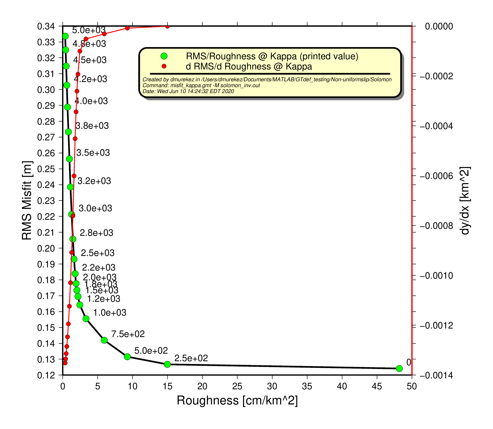

Dislocation Modeling using GTdef(V_3.2)
Sections of the GTdef model
(Clicking on section heads will return to the Table of Contents)-
Introduction
- Algorithms are written in Matlab and require the
'Parameter estimation' toolbox for inversions. - If you wish to use parallel processors, your version needs to include
parpool , which was implemented around 2015. - For plotting GMT version 5 or 6.
-
GTdef Code and How to Download it
-
Background Theory
-
The Input File
- Model parameters and data are combined in one input file.
- Forward and inverse models are mixed and distinguished by the range [min max]. If parameter min == max (e.g. 0 == 0), then the parameter is fixed
- Output files can be, and are often used as subsequent input files. For example, an inversion will produce model parameters that you may want to use to predict deformation away from the data that were used in the inversion.
- No specific order is required for specifying parameters
- The first column is important to identify the data type. Flag is not case sensitive.
- Information within parameter rows are all white-space separated.
- All parameters use the same units, defaulting to meters for each length of fault components, slip magnitudes, and measurement data.
- Angles are described in degree
- Depths are too reported in meters and are increasing going into the earth.
- Any line preceded by a hash
'#' is treated as a comment and is ignored. - The only requirements for the most simple input file are at least one fault line, and one 'data' line, describing the parameters for each. All lines are characterized by their first field and the line order does not matter.
- FAULT Types method used to describe fault [1-4], external geometries [5-6], or external Green's functions [7]
- 1 = uniformly or distributed slipping fault defined by one endpoint, fault length, and strike (ss ds ts)
- 2 = uniformly or distributed slipping fault defined by two endpoints (ss ds ts)
- 3 = uniformly or distributed slipping fault defined by one endpoint, fault length, and strike (rake rs ts)
- 4 = uniformly or distributed slipping fault defined by two endpoints (rake rs ts)
- 5 = external geometry with (ss ds ts)
- 6 = external geometry with (rake rs ts)
- 7 = external green functions
- The fault model defines a fault by its location in terms of longitude then latitude (or x then y if using a local coordinate system), its depth, strike and dip, slip parameters, and the number of subfaults within the model.
- FAULT Parameters (for fault type 1)
- flt = [ lon lat z1 z2 len str dip ss ds ts ss0 ssX ds0 dsX ts0 tsX ]
- lon,lat (or xx,yy) - one endpoint describing the surface projection of the faults in either geographic (default), or a local cartesian coordinate system
- z1 - vertical burial depth, describing top of slipping portion of fault [≥0]
- z2 - vertical locking depth, describing the bottom of slipping fault [≥0]
- len - fault length [≥0]
- str - strike from the endpoint describe above (degree CW from N) [0-360]
- dip - downward from horizontal, and right looking in the strike-direction [0-180]
- ss - strike-slip motion (left-lateral +)
- ds - dip-slip motion (thrust +)
- ts - tensile motion (opening +)
- ss0,ds0,ts0 - lower bounds for slips
- ssX,dsX,tsX - upper bounds for slips
- nd,ns - number of subfaults along-dip, and along-strike
- Data Types
Depending on data type both the data type identifier (first column) and the data-type number (second column) will change as described below..- point - data described at a single point at the surface (e.g. GPS).
Point-types are:- 1 = vertical component only
- 2 = east, and north components
- 3 = east, north, and vertical components
- los - a 1-D data point of arbitrary orientation (e.g. line-of-site to SAR satellite).
LOS-types are:- 1 = displacement in direction of LOS (e.g. toward satellite)
- 2 = phase change in LOS direction (not implemented yet)
- baseline - a baseline defined between two sites.
baseline-types are:- 1 = length change only
- 2 = east, north, and vertical components
- 3 = east, north, vertical,and length change components
- profile - a line defined by two endpoints with evenly distributed data points.
- grid - a parallelogram defined by the lower-left (lon1,lat1) and upper-right (lon2,lat2) corners with data points parallel to the sides.
- point - data described at a single point at the surface (e.g. GPS).
- Data Parameters
The data-types described above will use differing parameters. Their meaning and convention are describe here.- lon(x),lat(y),z - horizontal location and elevation (positive upward) [m]
- Erot,Nrot - rotation angles for the East and North axis of grid [degree; + CW] (-90 90)
- Ue,Un,Uv - surface displacements in East, North, and Vertical directions [m]
- Ul - length change between two sites [m]
- ULOS - surface displacement in LOS direction [m]
- eUe,eUn,eUv,eUl - standard error for displacements and length change [m]
- eULOS - standard error for surface displacement in LOS direction [m]
- LOSdirE,LOSdirN,LOSdirV - unit vector pointing from the ground toward the satellite (LOS direction)
- N,Ne,Nn - number of data points, and number of columns and rows
- wavelength - wavelength of signal for LOS (1/2 the SAR satellite natural wavelength)[not yet implemented]
- weight - weight for incorperating different type of data {1}
-
Simple Planar Forward Model
- We will create a vertical planar fault approximately 20 km long, with 1 meter, strike-slip motion, buried between 5 and 15 km depth. The output will describe the spatial deformation every 2 km across a 60x60 km grid surrounding the fault.
- To keep the algorithm from attempting an inversion, it is important that all slip parameter ranges for a given slip-type on a fault block have equal value (i.e. ss0=ssX, ds0=dsX, and ts0=tsX in this example).
- If all range values are set to zero
'0' , the initial value will be used. Here, we will have 1m of left-lateral (+) strike-slip that will not vary (all range parameters are set to zero). - Input files should all end in
.in - The input file can be created in your favorite text-editor (e.g. vim). For simplicity here, we'll just direct stdout from an echo-command into a file called
local1.in . The% represents a shell prompt.% echo " coord local
# otherwise it will expect geographic coordinates #fault type name lon1 lat1 lon2 lat2 z1 z2 dip ss ds ts ss0 ssX ds0 dsX ts0 tsX Nd Ns fault 2 myfault 0 -10e3 0 10e3 5e3 15e3 90 1 0 0 0 0 0 0 0 0 1 1#grid name Erot Nrot lon1(x1) lat1(y1) lon2(x2) lat2(y2) Ne Nn grid 1kmx1km 0 0 -30e3 -30e3 30e3 30e3 31 31 " > local1.in - To run
GTdef , you must call up matlab (interactive and gui are not necessary). - Be sure the current version of GTdef is in your path. You can check this using the
path function, and add it usingaddpath .# within matlab > addpath('/path/to/GTdef/v3.2/unstable/')%replacing with your actual path - The processing code that oversees both forward and inverse models is
GTdef and is called with just the input file name, and optionally, the number of processors you'd like it to use on your machine. By default, it will use all available processors if not defined.# within matlab > GTdef('local1.in',1)% will run on '1' core. - This will create an output file called
'local1_fwd.out' that will repeat the model, and give predicted results for the defined grid locations (now as'point' data-type). - Quick and dirty visualization can easily be achieved using the freely available gnuplot program. This allows us to look at the full 3D vector field.
# first comment out all lines that are not output data using vim or similar. (not shown) % gnuplot gnuplot> set ticslevel 0.0# removes empty whitespace below plot gnuplot> splot 'local1_fwd.out' u 4:5:(0):($7*1e5):($8*1e5):($9*1e5) w vect t "surface displacement"# just the surface results amplified to see variability #If you're more adventurous, you can plot the fault too (this assumes the fault is vertically dipping). gnuplot> splot "< awk '$1==\"point\"{print $0}' local1_fwd.out" u 4:5:(0):($7*1e5):($8*1e5):($9*1e5) w vect t "surface displacement",\ "< awk '$1==\"fault\"{printf \"%f %f %f\\n%f %f %f\\n%f %f %f\\n%f %f %f\\n%f %f %f\\n\", $4,$5,-$8,$6,$7,-$8,$6,$7,-$9,$4,$5,-$9,$4,$5,-$8}' local1_fwd.out" w l lw 2 lt -1 t "fault"# use the cursor to move around the data -
Uniform Slip Model Inversion:
- Data: Here, we pull coastal subsidence data from sheet 3 of the
excel spreadsheet.
The data, being just vertical uplift/subsidence data need to be convert into the '
point 1 ' format inGTdef . Errors are estimated to be approximately 0.1 m on all data (assuming error in tidal correction and prior high-tide estimates), Because all data were measured using the same methods and likely have similar error values, we choose to give them all equal weight.#point type name lon lat z Uv eUv weight point 1 Rendova-Rendova_Harbor 157.33602 -8.40359 0.0 -0.15 0.10 1.0 point 1 Rendova-Epata_Creek 157.30622 -8.43730 0.0 0 0.10 1.0 point 1 Rendova-Mbaniata 157.26260 -8.63325 0.0 -0.70 0.10 1.0 point 1 Rendova-Hofofo_Pt 157.19633 -8.56530 0.0 0 0.10 1.0 point 1 Rendova-Habila 157.22920 -8.60414 0.0 -0.60 0.10 1.0 point 1 Rendova-Rava_Pt 157.40336 -8.72264 0.0 -0.60 0.10 1.0 point 1 Tetepare-Tofa 157.53432 -8.75576 0.0 -0.40 0.10 1.0 point 1 Tetepare-Jetty_near_Ecolodge 157.44286 -8.72234 0.0 -0.25 0.10 1.0 point 1 Tetepare-Ecolodge_boat_ramp 157.44321 -8.72120 0.0 -0.30 0.10 1.0 point 1 Rendova-Rano 157.32886 -8.62969 0.0 -0.50 0.10 1.0 point 1 Rendova-Vankuva 157.33953 -8.60934 0.0 0 0.10 1.0 point 1 Rendova-Kofi_Bay_village 157.33874 -8.6039 0.0 -0.40 0.10 1.0 point 1 Rendova-Mauru_Loging_Camp 157.39881 -8.5137 0.0 -0.30 0.10 1.0 point 1 Rendova-Ugele 157.39921 -8.44959 0.0 0 0.10 1.0 Modeled Fault: We need to come up with a choice for the appropriate input model. This can be done using existing published fault geometries, evaluating distributions of microseismicity, focal mechanisms, examination of surface topography/bathymetry, or some combination of these methods. Once an initial model is chosen, output from a number of inversions using differing geometries can be used to chose an optimal geometry by evaluating each geometry's overall model fit. The output results of these inversions can then be broken up into distributed models (discussed below). Here, Newman et al. (2011) defined the fault using a combination of the overall fault strike, and testing a range of dip geometries.
For our inversion, we will define a finite range of allowble thrust(+) values (
ds , anddX between 0 and 100 m). Because data here are only vertical, we will chose to set strike-slip to 0 and not allow it to vary in the model, as this component will be very poorly constrained, possibly being dependent on choice of geometry. Finally, because this is a uniform slip model, the number of slip and strike components must be set to one (Nd=Ns=1 ).Note: Here, the dip =158° for a strike of 125°. This is equivelent to a dip of 22° striking 305°, but from the far end-point.
#fault type name lon lat z1 z2 len str dip ss ds ts ss0 ssX ds0 dsX ts0 tsX Nd Ns fault 1 slm 157.0990 -8.6920 0 5200 50000 125.0 158.0 0 0.1 0 0 0 0 100 0 0 1 1- Run: After combining the above parameters into a single input file (e.g. '
solomon.in '), you can run the code just as was done in the forward model. - Output files: If the model converges, you can analyze the output results in either the '
_inv.out ' or '_kp*.out '. The former file gives the fit results of the run, while the later gives the model results as well as their predicted displacements at the sites described in the orginal input model. Its this second file that can be used as an input for future runs.- Model fit: Below is the output from '
solomon_inv.out ' created byGTdef . Since there is only one inversion ran, there will be only one data line following a header line preceded by its column number (#).#(1)beta (2)kappa (3)data_num (4)slip_num (5)ndf (6)rss [m^2] (7)rms [m] (8)wrrs [m^2] (9)wrms [m] (10)chi2 (11)rchi2 (12)r_1d [cm/km] (13)r_2d [cm/km^2] (14)strain [cm/km] 0.00000e+00 0.00000e+00 14 1 13 4.05607e-01 1.70211e-01 4.05607e+01 1.70211e+00 4.05607e+01 3.12005e+00 NaN NaN NaN - Model results and predicted displacements: Shown here is the output from '
solomon_kp0.00000.out '. Note that in addition to lines repeating the input file, there are several default input options explicitely written out here (e.g. coord, earth, surface). Also included are model misfits repeated from the above file. Lastly, the model line now includes the model output for a best-fit (showing 5.16091 m of thrust), and the model predictions for each data line (e.g. Rendova-Mbaniata predicts 62.62 cm of subsidence).Though data type was input aspoint 1 , they are output aspoint 3 , giving the predicted horizontal motions as well. Errors are not reported for models.coord geo #data_num 14 #slip_num 1 #ndf 13 #rss 4.05607e-01 [m^2] #rms 1.70211e-01 [m] #wrss 4.05607e+01 [m^2] #wrms 1.70211e+00 [m] #chi2 4.05607e+01 #rchi2 3.12005e+00 #r_1d NaN [cm/km] #r_2d NaN [cm/km^2] #strain NaN [cm/km] earth homogeneous 3.00e+10 0.2500 kappa 0.00000 beta 0.00000 smooth 2d surface free fault 1 slm 157.09900000 -8.69200000 0.0000e+00 5.2000e+03 5.0000e+04 125.00 158.00 0.00000 5.16091 0.00000 0.0000 0.0000 0.0000 100.0000 0.0000 0.0000 1 1 point 3 Rendova-Rendova_Harbor 157.33602000 -8.40359000 0.00000e+00 -0.09951 -0.25301 0.00474 NaN NaN NaN 1.00 point 3 Rendova-Epata_Creek 157.30622000 -8.43730000 0.00000e+00 -0.11693 -0.31236 -0.00387 NaN NaN NaN 1.00 point 3 Rendova-Mbaniata 157.26260000 -8.63325000 0.00000e+00 -0.89590 -1.40681 -0.62620 NaN NaN NaN 1.00 point 3 Rendova-Hofofo_Pt 157.19633000 -8.56530000 0.00000e+00 -0.26215 -0.92622 -0.30033 NaN NaN NaN 1.00 point 3 Rendova-Habila 157.22920000 -8.60414000 0.00000e+00 -0.70254 -1.31715 -0.55581 NaN NaN NaN 1.00 point 3 Rendova-Rava_Pt 157.40336000 -8.72264000 0.00000e+00 -0.98978 -1.39069 -0.60162 NaN NaN NaN 1.00 point 3 Tetepare-Tofa 157.53432000 -8.75576000 0.00000e+00 -0.71027 -0.73619 -0.19750 NaN NaN NaN 1.00 point 3 Tetepare-Jetty_near_Ecolodge 157.44286000 -8.72234000 0.00000e+00 -0.87663 -1.18799 -0.39089 NaN NaN NaN 1.00 point 3 Tetepare-Ecolodge_boat_ramp 157.44321000 -8.72120000 0.00000e+00 -0.86957 -1.17774 -0.38133 NaN NaN NaN 1.00 point 3 Rendova-Rano 157.32886000 -8.62969000 0.00000e+00 -0.73815 -1.12756 -0.30286 NaN NaN NaN 1.00 point 3 Rendova-Vankuva 157.33953000 -8.60934000 0.00000e+00 -0.59654 -0.93641 -0.17707 NaN NaN NaN 1.00 point 3 Rendova-Kofi_Bay_village 157.33874000 -8.60390000 0.00000e+00 -0.57048 -0.90517 -0.16057 NaN NaN NaN 1.00 point 3 Rendova-Mauru_Loging_Camp 157.39881000 -8.51370000 0.00000e+00 -0.24266 -0.41934 -0.00177 NaN NaN NaN 1.00 point 3 Rendova-Ugele 157.39921000 -8.44959000 0.00000e+00 -0.15468 -0.29970 0.00941 NaN NaN NaN 1.00
- Model fit: Below is the output from '
- Predicting displacements elsewhere: To estimate model displacements outside of the original data points in '
_kp*.out ', you can copy the model output into a new file along with the points that you want prediced. Here, we are just using a grid, similar in the foward model example above, name it something like 'solomon_fwd.in ', and run as before.#fault type name lon lat z1 z2 len str dip ss ds ts ss0 ssX ds0 dsX ts0 tsX Nd Ns fault 1 slm 157.09896 -8.69204 0.00e+00 5.20e+03 5.00e+04 125.00 158.00 0.000 5.167 0.000 0.00 0.00 0.00 0.00 0.00 0.00 1 1#grid name Erot Nrot lon1 lat1 lon2 lat2 Ne Nn grid Solom_region 0 0 156.4 -9.3 158.1 -7.9 200 200 - Plotting results: One tool that is particularly useful is the supplied algorithm '
GTdef_project ', as it can take the predicted output model and transform it into a highly-readable file for your favorite plotting program.This creates a new file (here '>
% within matlab > GTdef_project('solomon_kp0.00000.out')solomon_kp0.00000_patches.out ') that describes all elements (here only one) of the model, including geographic position of corners, the element center position, and slip values. While you could use a more full-featured plotting program like GMT, we'll again usegnuplot for our quick and dirty plot to show the predicted displacements from '_kp*.out ', and then model geometry from '_kp*_patches.out '.After using your pointer to move around your model appropriately, your result should look something like this:# within gnuplot # Note: We are using diffential scaling of the displacement vectors to scale with the geographic position and depth (in degrees° and km) gnuplot> splot "< awk '$1==\"point\"{print $0}' solomon_kp0.00000.out"\ u 4:5:(0):($7*1e-1):($8*1e-1):($9*1e1) w vect t "surface displacement",\ "< awk '$1==\"slm\"{printf \"%f %f %f\\n%f %f %f\\n%f %f %f\\n%f %f %f\\n%f %f %f\\n\", $4,$5,-$6/1000,$7,$8,-$9/1000,$10,$11,-$12/1000,$13,$14,-$15/1000,$4,$5,-$6/1000}' solomon_kp0.00000_patches.out"\ w l lw 4 lt 7 -8 t "fault" -
Non-uniform Slip Model Inversion:
- Choose your kappa value (parameter that controls roughness) to range between 0 to 5000 by 500.
kappa 2 0 5000 11
- Setup your fault to now have 70 subfaults, 7 patches along-strike and 10 patches along-dip.
#fault type name lon lat z1 z2 len str dip ss ds ts ss0 ssX ds0 dsX ts0 tsX Nd Ns fault 1 slm 157.0990 -8.6920 0 5200 50000 305.0 22.0 0 0.1 0 0 0 0 100 0 0 7 10 - Invert and explore your results. Using misfit_kappa.gmt, try plotting misfit vs. roughness to see how your choices in kappa affect these results. Looking at the L-curve, the 4th lowest kappa value is optimal for this example data set.
 - You might want to look at your results in a geographic reference system. I've created a GMT script (slipmodel.gmt) to do this, but you must modify it for your purposes.
- Finally, once you've chosen your optimal kappa value, run a new forward model, and repredict deformation.
-
Checkerboard Testing:
- Define the size boxes that you will want to try to recreate in your checkerboards.
As a general rule, we find that the model patch size that you can interpret is dependent on and about equal to its depth relative to stations overhead.
This assumes stations are immediately overhead.
This will certainly change as a function fault dip, and station coverage, thus while you may have theoretical fidelity to recover even extremely small
patches near the trench (where the fault is just below you), you may not have data until you're on land, 50 to 200 km away.
Thus, we will take an initial example of a fault patch that is 50 km laterally from a 20° dipping fault surface,
the checkerboard patch should be around
50km*sin(20°)=17km . At 100 km, it's about34 km , and at 200 km it's about70 km , assuming constant dip. Note, that this is just a starting and approximate parameter. - You will now need to define a number of subfaults that match your expected optimal resolution.
This too can be done by hand, but the program,
GTdef_ckbd_subflt.m makes it much easier. Check out the header notes within the program for details. - For a fault named 'nicoya' with 30x40 patches and approximately 200 km x 200 km in size,
you can run
to define a fault that groups alternating blocks into 3 along dip, and 4 along strike patches. Here, the the blocks are 20x20 km (smallest size for coastal data--this is too small for deeper patches). The vectors here define the forward behavior of the patches that we normally think of as 1's and 0's. So, patch 1 (the black, or slipping patch), p1= is only backthrust at 82.3 mm (no inversion set for these patches). For patch 0 (the white, or null patch), p0= zeros (9 of them). The program will create a file called
% within matlab GTdef_ckbd_subflt('nicoya',30,40,3,4, [0 -.0823 0 0 0 0 0 0 0],[0 0 0 0 0 0 0 0 0])GTdef_ckbd_subflt.out that will only contain the sub-fault parameters. This will need to be copied into your input model file that contains your fault characterization and 'points' in which you want to predict deformation for the forward run.# in shell (command line) cat GTdef_ckbd_subflt.out >> nicoya_ckbd.in - Once it's ready, run
If everything works you will get your initial noise-free synthetics.
% within matlab GTdef('nicoya_ckbd.in') - Using
GTdef_slipmodel.gmt , plot the noise free model with thenicoya_ckbd_fwd.out (the output from the forward run). Running the code without options will give brief usage information.The figure should look like the example below.# in shell (command line) GTdef_slipmodel.gmt -M nicoya_ckbd.in -S100/100/10Note, that because this program is written for real data, the labeling may not be accurate. Here, 'observed' is arbitrary, and whatever was in your original input file. Modeled data are the predicted results that will be used for subsequent inversions. - Copy the program to your working directory (its called
add_noise.sh and is in the plotting directory shared with the GTdef scripts). - Edit the parameters at the top of the file to include the expected
East, North, and Vertical noise in your data (in meters).
Now run it it on the output file, directing into a new output.
As an example:
Note that the directed output is now ending in
# in shell (command line) add_noise.sh nicoya_ckbd_fwd.out > nicoya_ckbd_fwd_wNOISE.in'.in' . - Edit new synthetic input file to either comment out or remove the sub-fault definitions.
You can do this manually, or run a script:
# in shell (command line) # this scrubs file directing it into a new file that then replaces the original. grep -v subfault nicoya_ckbd_fwd_wNOISE.in > j1 ; mv j1 nicoya_ckbd_fwd_wNOISE.in - You can add or modify any other parameters that you want into the header of the file input file.
We want to be sure that we're running a range of kappa values.
Here it's 5 between 1000-5000, 5 between 7k and 15k, and 4 between 20k and 50k, but the useful range
depends on the number of patches and relation to data.
Modifynicoya_ckbd_fwd_wNOISE.in to include:surface free # slip to the trench here kappa 2 1000 5000 5 # 1k-5k for with n=5 kappa 2 7000 15000 5 # every 2k now kappa 2 20000 50000 4 # every 10k now resolution 1 # output the results of the resolution matrix (we can use later) lsqlin 10 1e-10 # less iterations and higher tolerance limits (faster runs with no real degradation). project on # runs through and creates easy to read geographically projected outputs of model and slip parameters.
Change the fault line to invert (e.g. make thrust range from -0.823 to 0, the ds0 and dsX values).#fault is set for inversion (ds0, dxX = 0, -.0823) #fault type name lon1 lat1 lon2 lat2 z1 z2 dip ss ds ts ss0 ssX ds0 dsX ts0 tsX Nd Ns fault 2 nicoya -85.54233907 8.74026277 -86.82826920 10.01077299 0 6.2e+04 17.0 0 -0.0823 0 0 0 -0.0823 0 0 0 30 40 - Run the inversion:
% within matlab GTdef('nicoya_ckbd_fwd_wNOISE.in') - Now, evaluate/visualize the results of the inversion to determine which patches have better or worse representation
of the original input model that you created (your checkerboards).
A great way to do this is to create very similar plots of both the result of the forward prediction (nicoya_ckbd_fwd.out)
and the new inverse at the kappa that you feel most appropriate (e.g.
nicoya_ckbd_fwd_wNOISE_k7000.out ). Now the files should be ready for the helper programGTdef_slipmodel.gmt .The figure should look like the example below.# in shell (command line) GTdef_slipmodel.gmt -M nicoya_ckbd_fwd_lowNOISE.in -K 7000 -S100/100/10
Notes:
As you can see in the above figure, the checkerboards are well represented right at the coast, however, the model becomes very smooth with apparent larger patches both updip and downdip. The updip resolution problem comes from a lack of stations immediately overhead, however, the downdip problem is because our patches are too small, and the earth between the data and the fault is "smoothing it out".
To improve on the downdip problem, it is possible to make a hybrid checkerboard model with larger downdip patches (maybe 40x40 km), to test the resolution of larger slip features.
- Checkerboard testing is relatively straightforward, but a somewhat cumbersome problem with a visual and not very quantitative assessment of the model quality given data. Instead, it may be much better to look at the output of the resolution matrix, itself.
- The examples used in the checkerboard tests above use campaign data from the Nicoya Seismic Cycle Observatory GPS data.
-
Resolution Spread Evaluation:
-
Ingesting External Green's Functions
-
References:
Needs to include other papers referred to above. Inc. Menke, Wang et al (2003), Santamarina., Funning et al., 2005; Kyriakopoulos and Newman, 2016 - Okada, Y. (1985). Surface deformation due to shear and tensile faults in a half-space, Bull. Seism. Soc. Am. 75, 1135-1154.
- Chen, T., A. V. Newman, L, Feng, H. M. Fritz (2009), Slip Distribution from the 1 April 2007 Solomon Islands Earthquake: A Unique Image of Near-Trench Rupture, Geophys. Res. Lett., 36, L16307, doi:10.1029/2009GL039496.
- Feng, L., A. V. Newman, J. M. Protti, V. González, Y. Jiang, T. H. Dixon (2012), Active Deformation near the Nicoya Peninsula, Northwestern Costa Rica, Between 1996 and 2010: Interseismic Megathrust Coupling, J. Geophys. Res., 117, B06407, doi:10.1029/2012JB009230.
Manual developed by Derrick Murekezi and Andrew Newman
The code is developed so that one could perform both forward models that predict ground deformation and inverse models that use data with errors and some modeling constraints to predict information about the source. The source in either case can be either simple rectangular slips along the plane, orthogonal to it or some combination of both.
Requirements:
- Current Version : GTDef 3.2
- Github Repository for Download :
https://github.gatech.edu/an77/GTDef.git
Kinematic Modeling:
A very brief discussion of kinematic modeling methods used here should exist. This would include each Okada (1985) analytical models, the Wang et al (2003) layered method, and general injestion of Green's functions from other sources.
Inverse Modeling:
While the simplified forward problem exists:
The code includes a detailed input file (click here to download/view) that describes the structure of the input file for both the foward and inverse models. The file describes the model parameters and how they differ for different models run. Below we have included snapshots of the input file for each example model.
Ground rules for the input file include:
FAULT characterization:
Each fault must fall into one of the below 7 categories described by the nature of slip on the fault, fault parameters, external geometries, or simply extrenal Green's functions. A fault line may look like (example shown in above-linked input file):#fault type name lon lat z1 z2 len str dip ss ds ts ss0 ssX ds0 dsX ts0 tsX Nd Ns fault 1 gnrc-1 -120.2000 38.0000 3e3 15e3 100e3 170.0 25.0 2.5e-3 1.2 0 0 0 1 1.5 0 0 1 1 # inverted only on dip-slip between 1 and 1.5 m
Data characterization:
Every input file needs to desribe either real data, or points in which you want to predict the surface motions. Each data line begins with its unique identifying name describe below. A data line for 3-component GPS point data may look like (also from above-linked input file):#point type name lon lat z Ue Un Uv eUe eUn eUv weight point 3 rdom -118.8979 37.6770 2417.4049 9.6 1.1 36.1 1.0 1.0 1.3 1
Other Model Parameters:
To be desribed (e.g. coord, smooth, greensfns, matfile, resolution)We'll start with the most straight-forward case of a single vertical fault plane with strike-slip motion on the interface.
Example Forward Model Run:
The simplist model includes just one fault and one data-point ran in a forward sense to prediction deformation at that data-point. We will not stray significantly from there.Input:
Run:
Output:
Input File:
We will need to build the model, including gathering the appropriate data and then estabishing an appropriate a priori interface. In this example, we will use the very small tsunami earthquake described in Newman et al. (2011).Output:
This problem is a little more tricky, as we will quickly go from an overdetermined problem (more data than model paremeters),
to an underdetermined problem.
In order to get around this, and to solve for realistic slip, we constrain the interdependence between individual slip patches.
The most popular way to do this is to define minimize the 'roughness' of the slip patch, as defined in
Harris and Segall (1987),
but more concisely in Jónsson_et al_(2002).
The method works to minimize the 2D second-order derivative of the slip surface so that large changes are constrained within a certain value.
The way it's been implemented here is that a series of roughness solutions are determined, all yielding different misfits to the data.
It is a somewhat arbitrary decision to chose the optimal roughness parameter. Usually this is done by evaluating the kink-point by which
additionally smooth results significantly increase misfits.
Develop a Synthetic Forward Model:
Adding Noise:
Good synthetic data includes an approximation of the noise that you'd get in the real data. For this, We've developed a simple shell script that searches only point data from an output file and adds Gaussian noise to the data itself. The program then writes out the perturbed data and error estimates representing the input error, of the size defined within the script. This program needs updating for easier and general use, but it's pretty easy to run, as is.
Invert Synthetics:
Here we will determine what the synthetic and noised data show on the fault.
If you've ran inversions with the
From the diagonals of the resolution matrix,
Because
We've created a program that calculates
# in shell (command line) GTdef_Rmodel.gmt -M nicoya_ckbd_fwd_lowNOISE.in -K7000 -S D -D
The figure should look similar to the example below.
The real beauty of the Resolution Spread is in it's simplicity and quantitative nature. Instead of creating apriori assessments of approximate resolvable model size, developing a model/running it, and doing "squinty-eyed" qualitative analysis of what you can resolve (as is done with Checkerboard testing), you get real numbers, with direct resolvable properties of patch size.
While plotting
murekezi
 gatech.edu, anewmangatech.edu | Updated:
gatech.edu, anewmangatech.edu | Updated: